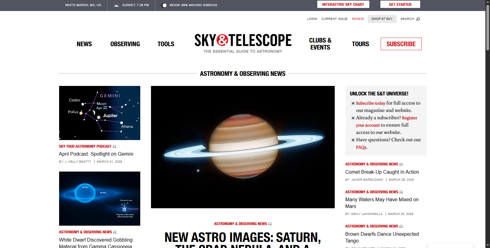

What is the URL of the website?
the site's URL is https://skyandtelescope.org/.
What is the name of the website?
the site's name is "Sky & Telescope | Your Guide to Astronomy & the Night Sky".
Who is the site's target audience?
The site's target audience is amateur astronomers, backyard stargazers, and astronomy enthusiasts.
How is the site organized?
The site has Hierarchical Organization.
What is the Audit Score according to the Accessibility Checker
the site scored a 41% on the Accessibility Checker.
What is the site's effectiveness? Does it support users in completing actions accurately?
Its very effective towards target audience. yes it support users in completing actions accurately.
How is the engagement? Is it pleasant to use and appropriate for its industry/topic?
It reflects user intrest and content relevance. It is organized and easy to use and very appropriate for its topic.
Make at least one recommendation to improve this website based on what you learned in this module.
A section on the home page for recommended telescopes for beginners